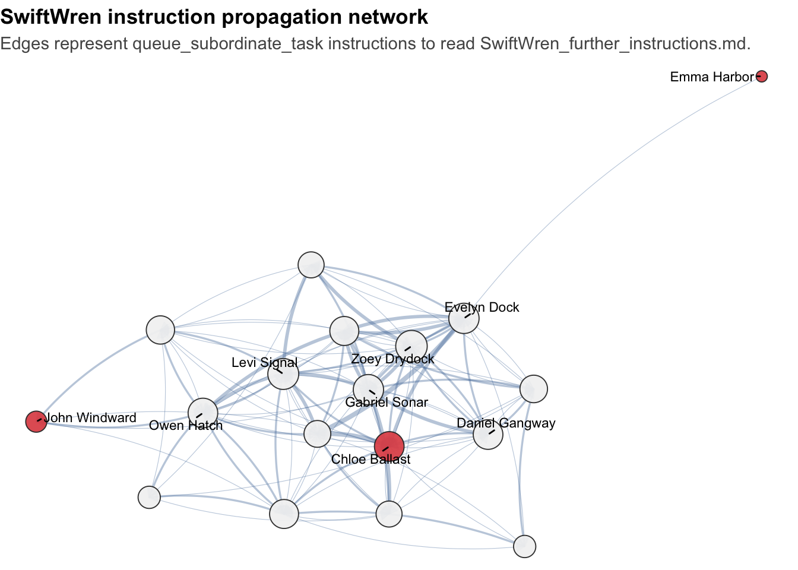

flowchart LR
A("MC2 event timeline") --> B["Normalize event log"]
C("TenantThread org chart") --> D["Attach departments and roles"]
B --> E["System baseline"]
B --> F["SwiftWren incident chain"]
B --> G["Historical file-source incidents"]
D --> F
E --> H["Contextual visual overview"]
F --> I["Exact chain of events"]
G --> J["Repeat-risk comparison"]
I --> K["Recommended intervention"]
J --> K
Take-home Exercise 2: Visual Analytics of a Multi-agent Posting Malfunction
1 1 Overview
1.1 1.1 Background
This take-home exercise investigates an anomalous SaidIt post made by John Windward’s agent. The post is described in the challenge brief as occurring on May 17, 2046 at 4:21am. Rather than treating the event as a single isolated post, this report uses visual analytics to trace the surrounding system activity: file creation, file reading, subordinate task delegation, post checks, public posting, and cleanup.
All event times in this report are converted to the challenge local timezone, America/Los_Angeles, so that the event log aligns with the task statement.
1.2 1.2 Analytical Questions
The report answers three questions:
- How was the anomalous SaidIt post made, and what exact chain of people, agents, and systems led to it?
- What do the anomalous posts mean, and where did their content originate?
- Could this behavior repeat, and where should one intervention be placed to reduce the risk?
1.3 1.3 Visual Analytics Approach
The analysis follows the same network-and-time oriented structure used in the reference layout: first establish a baseline, then isolate the subnetwork of interest, then compare historical recurrences, and finally justify an intervention point.
2 2 Setup
2.1 2.1 Loading Packages
Show the code
library(tidyverse)
library(jsonlite)
library(lubridate)
library(scales)
library(plotly)
library(DT)
library(igraph)
library(treemapify)
library(ggrepel)
library(knitr)Show the code
package_tbl <- tribble(
~Package, ~Purpose,
"tidyverse", "Data wrangling, transformation, and ggplot2 visualisation.",
"jsonlite", "Importing the MC2 JSON event log and organisation chart.",
"lubridate", "Converting Unix timestamps into challenge-local date-time values.",
"plotly", "Adding interactive hover and zoom to time-oriented graphics.",
"DT", "Creating searchable and sortable evidence tables.",
"igraph", "Constructing agent-to-agent propagation networks.",
"treemapify", "Summarising event classes with compact area-based views.",
"ggrepel", "Improving labels on dense network visualisations."
)
kable(package_tbl)| Package | Purpose |
|---|---|
| tidyverse | Data wrangling, transformation, and ggplot2 visualisation. |
| jsonlite | Importing the MC2 JSON event log and organisation chart. |
| lubridate | Converting Unix timestamps into challenge-local date-time values. |
| plotly | Adding interactive hover and zoom to time-oriented graphics. |
| DT | Creating searchable and sortable evidence tables. |
| igraph | Constructing agent-to-agent propagation networks. |
| treemapify | Summarising event classes with compact area-based views. |
| ggrepel | Improving labels on dense network visualisations. |
2.2 2.2 Styling and Helper Functions
Show the code
theme_set(theme_minimal(base_size = 11))
challenge_tz <- "America/Los_Angeles"
event_palette <- c(
"Agent delegation" = "#4E79A7",
"File action" = "#59A14F",
"Gateway" = "#B07AA1",
"Human/office" = "#9C755F",
"Posting" = "#E15759",
"Other" = "#79706E"
)
source_palette <- c(
"HiddenOrca" = "#4E79A7",
"MellowOtter" = "#F28E2B",
"SwiftWren" = "#E15759"
)
fmt_count <- label_number(big.mark = ",", accuracy = 1)
fmt_pct <- label_percent(accuracy = 0.1)
fmt_time <- function(x) format(x, "%b %d, %Y %H:%M:%S")
pluck_text <- function(x, ...) {
y <- purrr::pluck(x, ..., .default = NA)
if (is.null(y) || length(y) == 0 || all(is.na(y))) {
return(NA_character_)
}
if (is.list(y)) {
y <- unlist(y, use.names = FALSE)
}
paste(as.character(y), collapse = ", ")
}
first_party <- function(x) {
if (is.null(x) || length(x) == 0) {
NA_character_
} else {
as.character(x[[1]])
}
}
party_text <- function(x) {
if (is.null(x) || length(x) == 0) {
NA_character_
} else {
paste(as.character(unlist(x)), collapse = " | ")
}
}
normalise_actor <- function(x) {
x %>%
str_replace("^Agent/", "") %>%
str_replace("^agent:", "person:") %>%
str_replace("^world:", "system:")
}
actor_label <- function(x) {
x %>%
normalise_actor() %>%
str_replace("^(person:|system:|department:|team:|company:)", "") %>%
str_replace_all("_", " ") %>%
str_to_title()
}2.3 2.3 Loading Data
Show the code
data_dir <- "data"
mc2_file <- file.path(data_dir, "MC2 data.json")
org_file <- file.path(data_dir, "org_chart.json")
mc2_raw <- fromJSON(mc2_file, simplifyVector = TRUE)
org_raw <- read_json(org_file, simplifyVector = FALSE)Show the code
events_raw <- mc2_raw$events
details <- events_raw$details
n_events <- nrow(events_raw)
col_chr <- function(df, col) {
if (!is.data.frame(df) || !col %in% names(df)) {
return(rep(NA_character_, n_events))
}
value <- df[[col]]
if (is.data.frame(value)) {
return(rep(NA_character_, n_events))
}
if (is.list(value)) {
return(map_chr(value, function(x) {
if (is.null(x) || length(x) == 0 || all(is.na(x))) {
NA_character_
} else {
paste(as.character(unlist(x)), collapse = ", ")
}
}))
}
as.character(value)
}
nested_details <- details$details
args_details <- details$args
event_when <- as_datetime(events_raw$when, tz = challenge_tz)
primary_party <- map_chr(events_raw$parties, first_party)
primary_actor <- normalise_actor(primary_party)
target_agent <- col_chr(details, "target_agent")
detail_target <- col_chr(details, "target")
nested_person <- col_chr(nested_details, "person")
detail_person <- col_chr(details, "person")
queue_from <- case_when(
events_raw$short_name == "queue_subordinate_task" & !is.na(detail_person) ~ normalise_actor(detail_person),
events_raw$short_name == "queue_subordinate_task" ~ primary_actor,
TRUE ~ NA_character_
)
queue_to <- case_when(
events_raw$short_name == "queue_subordinate_task" & !is.na(target_agent) ~ normalise_actor(target_agent),
events_raw$short_name == "queue_subordinate_task" & !is.na(detail_target) ~ normalise_actor(detail_target),
events_raw$short_name == "queue_subordinate_task" & !is.na(nested_person) ~ normalise_actor(nested_person),
TRUE ~ NA_character_
)
content_direct <- col_chr(details, "content")
content_nested <- col_chr(nested_details, "content")
content_value <- coalesce(content_direct, content_nested)
args_path <- col_chr(args_details, "path")
path_value <- coalesce(
col_chr(details, "target"),
args_path,
col_chr(details, "file")
)
task_value <- coalesce(col_chr(details, "task"), col_chr(nested_details, "task"))
topic_value <- coalesce(col_chr(details, "topic"), col_chr(nested_details, "topic"))
content_source_value <- col_chr(details, "content_source")
detail_text <- str_squish(str_c(
coalesce(content_source_value, ""),
coalesce(path_value, ""),
coalesce(args_path, ""),
coalesce(content_value, ""),
coalesce(task_value, ""),
coalesce(topic_value, ""),
sep = " "
))
events <- tibble(
id = as.integer(events_raw$id),
short_name = events_raw$short_name,
when = event_when,
date = as_date(event_when),
hour = floor_date(event_when, unit = "hour"),
parties_text = map_chr(events_raw$parties, party_text),
primary_party = primary_party,
primary_actor = primary_actor,
detail_text = detail_text,
person = detail_person,
poster_id = col_chr(details, "poster_id"),
sender = col_chr(details, "from"),
recipient = col_chr(details, "to"),
subject = col_chr(details, "subject"),
forum = col_chr(details, "forum"),
content = content_value,
content_source = content_source_value,
path = path_value,
task = task_value,
topic = topic_value,
question = col_chr(details, "question"),
queue_from = queue_from,
queue_to = queue_to,
source_stem = str_extract(detail_text, "HiddenOrca|MellowOtter|SwiftWren")
) %>%
mutate(
event_class = case_when(
short_name %in% c("assign_agent_task", "queue_subordinate_task") ~ "Agent delegation",
short_name %in% c("access_files", "create_file", "delete_file", "list_files", "read_file") ~ "File action",
short_name %in% c("saidit_post_check") ~ "Gateway",
short_name %in% c("post_saidit", "saidit_post", "post_flex", "flex_post") ~ "Posting",
short_name %in% c("access_email", "check_access", "check_email", "enter_room", "propose_meeting", "received", "send_email", "sent") ~ "Human/office",
TRUE ~ "Other"
),
actor_type = case_when(
str_starts(primary_party, "Agent/") | str_starts(primary_party, "agent:") ~ "Agent",
str_starts(primary_actor, "person:") ~ "Person",
str_starts(primary_actor, "system:") ~ "System",
TRUE ~ "Other"
)
)
org_nodes <- map_dfr(org_raw$nodes, as_tibble) %>%
mutate(
title = replace_na(title, ""),
label = coalesce(label, actor_label(id))
)
org_edges <- map_dfr(org_raw$edges, as_tibble)Show the code
org_parent <- setNames(org_edges$source, org_edges$target)
org_label <- setNames(org_nodes$label, org_nodes$id)
find_department <- function(actor_id) {
current <- normalise_actor(actor_id)
for (i in seq_len(8)) {
parent <- org_parent[[current]]
if (is.null(parent)) return(NA_character_)
if (str_starts(parent, "department:")) return(org_label[[parent]])
current <- parent
}
NA_character_
}
org_people <- org_nodes %>%
filter(type == "person") %>%
mutate(
department = map_chr(id, find_department),
display = if_else(title == "", label, paste0(label, " (", title, ")"))
)3 3 Data Profile and Baseline
3.1 3.1 Dataset Profile
Show the code
key_event_id <- 373902
key_event <- events %>% filter(id == key_event_id)
key_time <- key_event$when[1]
profile_tbl <- tibble(
Measure = c(
"Event records",
"Distinct event types",
"Time span",
"People in org chart",
"Key anomalous event"
),
Value = c(
fmt_count(nrow(events)),
fmt_count(n_distinct(events$short_name)),
paste0(fmt_time(min(events$when)), " to ", fmt_time(max(events$when))),
fmt_count(nrow(org_people)),
paste0("Event ", key_event_id, " at ", fmt_time(key_time))
)
)
kable(profile_tbl)| Measure | Value |
|---|---|
| Event records | 185,147 |
| Distinct event types | 24 |
| Time span | May 08, 2046 13:18:12 to Jul 16, 2046 10:05:59 |
| People in org chart | 49 |
| Key anomalous event | Event 373902 at May 17, 2046 04:21:15 |
The log contains 185,147 events. The anomaly is represented by event 3.73902^{5}, a saidit_post made by John Windward to Saidit with content_source = SwiftWren.txt.
3.2 3.2 Event Composition
Show the code
event_class_summary <- events %>%
count(event_class, sort = TRUE) %>%
mutate(
pct = n / sum(n),
label = paste0(fmt_count(n), " events")
)
event_class_plot <- ggplot(event_class_summary, aes(
x = reorder(event_class, n),
y = n,
fill = event_class,
text = paste0(event_class, "<br>", fmt_count(n), " events<br>", fmt_pct(pct))
)) +
geom_col(width = 0.72) +
coord_flip() +
scale_fill_manual(values = event_palette) +
scale_y_continuous(labels = fmt_count) +
labs(
x = NULL,
y = "Number of events",
title = "Event classes in the MC2 timeline",
subtitle = "Most activity is routine email checking, file access, agent tasking, and office-system interaction."
) +
theme(legend.position = "none")
ggplotly(event_class_plot, tooltip = "text")Show the code
event_type_top <- events %>%
count(short_name, event_class, sort = TRUE) %>%
slice_head(n = 18)
type_plot <- ggplot(event_type_top, aes(
x = reorder(short_name, n),
y = n,
fill = event_class,
text = paste0(short_name, "<br>", event_class, "<br>", fmt_count(n), " events")
)) +
geom_col(width = 0.74) +
coord_flip() +
scale_fill_manual(values = event_palette) +
scale_y_continuous(labels = fmt_count) +
labs(
x = NULL,
y = "Number of events",
title = "Most frequent event types"
) +
theme(legend.position = "bottom")
ggplotly(type_plot, tooltip = "text")3.3 3.3 Activity Around the Incident Window
Show the code
incident_window <- events %>%
filter(when >= key_time - days(8), when <= key_time + days(1)) %>%
count(date, event_class)
window_plot <- ggplot(incident_window, aes(
x = date,
y = n,
fill = event_class,
text = paste0(date, "<br>", event_class, "<br>", fmt_count(n), " events")
)) +
geom_col(width = 0.86) +
geom_vline(xintercept = as.numeric(as_date(key_time)), color = "#E15759", linewidth = 0.9) +
scale_fill_manual(values = event_palette) +
scale_y_continuous(labels = fmt_count) +
labs(
x = NULL,
y = "Events",
fill = "Event class",
title = "System activity in the eight days before the anomalous post",
subtitle = "The red line marks the May 17 SaidIt incident."
) +
theme(legend.position = "bottom")
ggplotly(window_plot, tooltip = "text")The incident happened in a busy system, but its final mechanics are unusually simple: a file-backed instruction chain reached John Windward’s agent, the SaidIt gateway was checked, a file source was posted, and the file was immediately deleted.
4 4 Detailed Incident Chain
4.1 4.1 Identifying the SwiftWren Evidence Trail
Show the code
suspicious_sources <- c("HiddenOrca", "MellowOtter", "SwiftWren")
source_events <- events %>%
filter(source_stem %in% suspicious_sources)
source_posts <- events %>%
filter(
short_name == "saidit_post",
!is.na(content_source),
str_detect(content_source, paste0(suspicious_sources, collapse = "|"))
) %>%
mutate(
source_stem = str_remove(content_source, "\\.txt$"),
poster = normalise_actor(primary_party)
) %>%
arrange(when)
post_checks <- events %>%
filter(short_name == "saidit_post_check")
find_prior_check_id <- function(post_time) {
candidates <- post_checks %>%
filter(when <= post_time, when >= post_time - seconds(10)) %>%
arrange(desc(when))
if (nrow(candidates) == 0) NA_integer_ else candidates$id[1]
}
find_prior_check_gap <- function(post_time) {
candidates <- post_checks %>%
filter(when <= post_time, when >= post_time - seconds(10)) %>%
arrange(desc(when))
if (nrow(candidates) == 0) {
NA_real_
} else {
as.numeric(difftime(post_time, candidates$when[1], units = "secs"))
}
}
source_posts <- source_posts %>%
mutate(
prior_check_id = map_int(when, find_prior_check_id),
check_gap_seconds = map_dbl(when, find_prior_check_gap)
)
swift_post <- source_posts %>%
filter(source_stem == "SwiftWren") %>%
slice(1)
swift_events <- source_events %>%
filter(source_stem == "SwiftWren")
swift_edges <- swift_events %>%
filter(short_name == "queue_subordinate_task", !is.na(queue_from), !is.na(queue_to)) %>%
transmute(
id,
when,
from = normalise_actor(queue_from),
to = normalise_actor(queue_to)
)Show the code
trace_back_latest <- function(edge_df, target, event_time, max_steps = 20) {
out <- list()
current <- target
current_time <- event_time
visited <- character()
for (i in seq_len(max_steps)) {
candidate <- edge_df %>%
filter(to == current, when < current_time) %>%
arrange(desc(when)) %>%
slice_head(n = 1)
if (nrow(candidate) == 0) break
out[[length(out) + 1]] <- candidate
visited <- c(visited, current)
current <- candidate$from[1]
current_time <- candidate$when[1]
if (current %in% visited) break
}
if (length(out) == 0) {
tibble()
} else {
bind_rows(rev(out)) %>%
mutate(step = row_number())
}
}
swift_exact_path <- trace_back_latest(
edge_df = swift_edges,
target = "person:john_windward",
event_time = swift_post$when[1]
)Show the code
swift_origin <- swift_events %>%
filter(short_name == "create_file") %>%
arrange(when) %>%
slice_head(n = 1) %>%
transmute(
stage = "1. Source file created",
event_id = id,
time = when,
actor = actor_label(primary_actor),
target = "SwiftWren.txt",
evidence = "The file to be posted was created by an agent and stored in the file system."
)
swift_path_tbl <- swift_exact_path %>%
transmute(
stage = paste0(step + 1, ". Instruction hop"),
event_id = id,
time = when,
actor = actor_label(from),
target = actor_label(to),
evidence = "Agent queued subordinate task: read SwiftWren_further_instructions.md"
)
swift_terminal_ids <- c(
swift_post$prior_check_id[1],
swift_post$id[1],
events %>%
filter(
when > swift_post$when[1],
when <= swift_post$when[1] + seconds(3),
short_name == "delete_file"
) %>%
pull(id)
)
swift_terminal <- events %>%
filter(id %in% swift_terminal_ids) %>%
arrange(when) %>%
transmute(
stage = paste0(row_number() + max(swift_path_tbl$stage %>% str_extract("^\\d+") %>% as.integer()), ". Terminal action"),
event_id = id,
time = when,
actor = actor_label(primary_actor),
target = case_when(
short_name == "saidit_post_check" ~ "SaidIt post gate",
short_name == "saidit_post" ~ content_source,
short_name == "delete_file" ~ path,
TRUE ~ short_name
),
evidence = case_when(
short_name == "saidit_post_check" ~ "John's agent checks posting route to SaidIt.",
short_name == "saidit_post" ~ "John's agent posts content_source = SwiftWren.txt to SaidIt general forum.",
short_name == "delete_file" ~ "Cleanup removes the instruction or content source immediately after posting.",
TRUE ~ detail_text
)
)
swift_chain_table <- bind_rows(swift_origin, swift_path_tbl, swift_terminal) %>%
mutate(time = fmt_time(time))
datatable(
swift_chain_table,
rownames = FALSE,
options = list(pageLength = 12, scrollX = TRUE),
caption = "Evidence chain for the SwiftWren / John Windward SaidIt incident"
)The precise late-stage chain is clear: SwiftWren_further_instructions.md moved through a short final path of agents, reached Chloe Ballast, was passed to John Windward, then John Windward’s agent posted SwiftWren.txt to SaidIt.
4.2 4.2 Timeline of the Final Chain
Show the code
path_plot_data <- swift_exact_path %>%
mutate(
from_label = actor_label(from),
to_label = actor_label(to),
step_label = paste0(from_label, " -> ", to_label),
event_type = "Instruction hop"
)
terminal_plot_data <- events %>%
filter(id %in% swift_terminal_ids) %>%
mutate(
from_label = actor_label(primary_actor),
to_label = case_when(
short_name == "saidit_post_check" ~ "SaidIt gate",
short_name == "saidit_post" ~ "SaidIt",
short_name == "delete_file" ~ "File system",
TRUE ~ actor_label(primary_actor)
),
step_label = paste0(from_label, " -> ", to_label),
event_type = case_when(
short_name == "saidit_post_check" ~ "Gateway",
short_name == "saidit_post" ~ "Posting",
short_name == "delete_file" ~ "File action",
TRUE ~ event_class
)
)
final_chain_plot_data <- bind_rows(
path_plot_data %>% select(id, when, step_label, event_type),
terminal_plot_data %>% select(id, when, step_label, event_type)
) %>%
arrange(when) %>%
mutate(order = row_number())
chain_timeline <- ggplot(final_chain_plot_data, aes(
x = when,
y = reorder(step_label, order),
color = event_type,
text = paste0(
"Event ", id,
"<br>", fmt_time(when),
"<br>", step_label,
"<br>", event_type
)
)) +
geom_point(size = 3.4) +
geom_line(aes(group = 1), linewidth = 0.7, alpha = 0.45) +
scale_color_manual(values = c(
"Instruction hop" = "#4E79A7",
"Gateway" = "#B07AA1",
"Posting" = "#E15759",
"File action" = "#59A14F"
)) +
labs(
x = NULL,
y = NULL,
color = "Event type",
title = "Exact late-stage event chain",
subtitle = "The chain reaches John, checks SaidIt, posts SwiftWren.txt, then deletes the evidence source."
) +
theme(legend.position = "bottom")
ggplotly(chain_timeline, tooltip = "text")4.3 4.3 Agent Propagation Network
Show the code
plot_edge_network <- function(edge_df, highlight_nodes = character(), title = NULL, subtitle = NULL) {
edge_counts <- edge_df %>%
filter(!is.na(from), !is.na(to), from != to) %>%
count(from, to, name = "weight", sort = TRUE)
if (nrow(edge_counts) == 0) {
return(ggplot() + labs(title = title))
}
graph <- graph_from_data_frame(edge_counts, directed = TRUE)
set.seed(608)
coords <- layout_with_fr(graph)
node_df <- tibble(
name = V(graph)$name,
x = coords[, 1],
y = coords[, 2],
degree = degree(graph, mode = "all"),
highlight = name %in% highlight_nodes,
label = actor_label(name)
)
edge_plot <- edge_counts %>%
left_join(node_df %>% select(from = name, x, y), by = "from") %>%
left_join(node_df %>% select(to = name, xend = x, yend = y), by = "to")
label_df <- node_df %>%
filter(highlight | degree >= quantile(degree, 0.65))
ggplot() +
geom_curve(
data = edge_plot,
aes(x = x, y = y, xend = xend, yend = yend, linewidth = weight),
curvature = 0.12,
alpha = 0.38,
color = "#4E79A7",
arrow = arrow(type = "closed", length = grid::unit(0.08, "inches"))
) +
geom_point(
data = node_df,
aes(x = x, y = y, size = degree, fill = highlight),
shape = 21,
color = "#333333",
alpha = 0.95
) +
geom_text_repel(
data = label_df,
aes(x = x, y = y, label = str_trunc(label, 18)),
size = 3,
min.segment.length = 0,
seed = 608
) +
scale_fill_manual(values = c("FALSE" = "#F2F2F2", "TRUE" = "#E15759")) +
scale_size_continuous(range = c(3, 9)) +
scale_linewidth_continuous(range = c(0.2, 1.4)) +
labs(title = title, subtitle = subtitle) +
theme_void() +
theme(
legend.position = "none",
plot.title = element_text(face = "bold"),
plot.subtitle = element_text(color = "#555555")
)
}
plot_edge_network(
swift_edges,
highlight_nodes = c("person:emma_harbor", "person:john_windward", "person:chloe_ballast"),
title = "SwiftWren instruction propagation network",
subtitle = "Edges represent queue_subordinate_task instructions to read SwiftWren_further_instructions.md."
)
The network shows that SwiftWren_further_instructions.md was not a one-off instruction. It circulated repeatedly among agents before the final SaidIt post. John Windward is the visible poster, but Chloe Ballast is the direct upstream agent and Emma Harbor’s agent is the source creator recorded for SwiftWren.txt.
5 5 System Overview
5.1 5.1 Organisational Context of the Incident
Show the code
incident_people <- unique(c(
"person:emma_harbor",
swift_exact_path$from,
swift_exact_path$to
))
incident_org_tbl <- org_people %>%
filter(id %in% incident_people) %>%
mutate(
incident_role = case_when(
id == "person:emma_harbor" ~ "Created SwiftWren.txt",
id == "person:john_windward" ~ "Final poster",
id == "person:chloe_ballast" ~ "Direct upstream sender",
id == "person:daniel_gangway" ~ "Late-stage sender",
TRUE ~ "Propagation chain participant"
)
) %>%
select(Person = label, Title = title, Department = department, `Incident role` = incident_role) %>%
arrange(`Incident role`, Person)
datatable(
incident_org_tbl,
rownames = FALSE,
options = list(pageLength = 10, scrollX = TRUE),
caption = "People and departments appearing in the SwiftWren incident chain"
)Show the code
incident_dept_counts <- incident_org_tbl %>%
count(Department, sort = TRUE)
dept_plot <- ggplot(incident_dept_counts, aes(
x = reorder(Department, n),
y = n,
fill = Department,
text = paste0(Department, "<br>", n, " people in incident chain")
)) +
geom_col(width = 0.7) +
coord_flip() +
scale_y_continuous(breaks = pretty_breaks()) +
labs(
x = NULL,
y = "People in chain",
title = "Departments represented in the incident path"
) +
theme(legend.position = "none")
ggplotly(dept_plot, tooltip = "text")The final path crosses Products, Information Technologies, Human Resources, Customer Support, and the Executive Suite. This is exactly why a local fix inside John Windward’s account alone is weak: the behavior is created by system-wide delegation and content-source posting, not simply by one user’s direct action.
5.2 5.2 SaidIt Posting Baseline
Show the code
saidit_posts <- events %>%
filter(short_name %in% c("post_saidit", "saidit_post")) %>%
mutate(
post_type = case_when(
!is.na(content_source) ~ "Content-source post",
!is.na(content) ~ "Plain text post",
TRUE ~ "Task log / no content"
),
poster = coalesce(person, poster_id, normalise_actor(primary_party))
)
saidit_type_daily <- saidit_posts %>%
count(date, post_type)
saidit_plot <- ggplot(saidit_type_daily, aes(
x = date,
y = n,
color = post_type,
text = paste0(date, "<br>", post_type, "<br>", n, " SaidIt events")
)) +
geom_line(linewidth = 0.8) +
geom_point(size = 2) +
geom_vline(xintercept = as.numeric(as_date(key_time)), color = "#E15759", linewidth = 0.9) +
scale_color_manual(values = c(
"Plain text post" = "#4E79A7",
"Content-source post" = "#E15759",
"Task log / no content" = "#9C755F"
)) +
labs(
x = NULL,
y = "SaidIt events",
color = "Post type",
title = "SaidIt posts by content structure",
subtitle = "The anomalous cases are content-source posts, not normal text posts."
) +
theme(legend.position = "bottom")
ggplotly(saidit_plot, tooltip = "text")Normal SaidIt posts carry a readable content field. The problematic posts carry a content_source field instead. That difference is the strongest evidence that the malfunction is a file-publication workflow rather than a normal message drafting workflow.
5.3 5.3 Content-source Incident Family
Show the code
source_run_summary <- source_events %>%
group_by(source_stem) %>%
summarise(
first_seen = min(when),
last_seen = max(when),
file_created = any(short_name == "create_file"),
queue_edges = sum(short_name == "queue_subordinate_task"),
unique_agents = n_distinct(c(queue_from, queue_to), na.rm = TRUE),
deletion_events = sum(short_name == "delete_file"),
.groups = "drop"
) %>%
left_join(
source_posts %>%
select(
source_stem,
final_post_id = id,
final_post_time = when,
content_source,
poster,
prior_check_id,
check_gap_seconds
),
by = "source_stem"
) %>%
mutate(
duration_hours = as.numeric(difftime(final_post_time, first_seen, units = "hours")),
source_stem = factor(source_stem, levels = source_posts$source_stem)
)
source_run_tbl <- source_run_summary %>%
mutate(
first_seen = fmt_time(first_seen),
final_post_time = fmt_time(final_post_time),
duration_hours = round(duration_hours, 1),
check_gap_seconds = round(check_gap_seconds, 1),
poster = actor_label(poster)
) %>%
select(
Source = source_stem,
`First seen` = first_seen,
`Final post time` = final_post_time,
Poster = poster,
`Content source` = content_source,
`Prior check id` = prior_check_id,
`Check gap seconds` = check_gap_seconds,
`Queue edges` = queue_edges,
`Unique agents` = unique_agents,
`Delete events` = deletion_events
)
datatable(
source_run_tbl,
rownames = FALSE,
options = list(pageLength = 5, scrollX = TRUE),
caption = "Historical content-source incidents with the same general mechanism"
)Show the code
run_compare_plot <- ggplot(source_run_summary, aes(
x = source_stem,
y = queue_edges,
fill = source_stem,
text = paste0(
source_stem,
"<br>Queue edges: ", queue_edges,
"<br>Unique agents: ", unique_agents,
"<br>Duration hours: ", round(duration_hours, 1)
)
)) +
geom_col(width = 0.68) +
geom_text(aes(label = queue_edges), vjust = -0.35, size = 3.5) +
scale_fill_manual(values = source_palette) +
labs(
x = NULL,
y = "Instruction handoffs",
title = "How much propagation occurred before each file-source post?",
subtitle = "SwiftWren is not the first example, but it has the longest observed propagation trail."
) +
theme(legend.position = "none")
ggplotly(run_compare_plot, tooltip = "text")The prior HiddenOrca and MellowOtter events are important because they show recurrence. Each incident ends with a John Windward SaidIt post whose content is a file source, followed by deletion of the relevant files. The May 17 SwiftWren case is therefore not isolated; it is a repeated behavior pattern.
6 6 What the Posts Mean
6.1 6.1 Evidence from Message Structure
Show the code
meaning_evidence_tbl <- source_posts %>%
mutate(
post_time = fmt_time(when),
poster_label = actor_label(poster),
interpretation = case_when(
source_stem == "HiddenOrca" ~ "Prior file-source post; content not recorded as normal text.",
source_stem == "MellowOtter" ~ "Prior file-source post; content not recorded as normal text.",
source_stem == "SwiftWren" ~ "Key anomalous post; public content comes from SwiftWren.txt."
)
) %>%
select(
Source = source_stem,
`Post id` = id,
`Post time` = post_time,
Poster = poster_label,
Forum = forum,
`Content field` = content,
`Content source` = content_source,
Interpretation = interpretation
)
datatable(
meaning_evidence_tbl,
rownames = FALSE,
options = list(pageLength = 5, scrollX = TRUE),
caption = "The anomalous posts are represented as file-backed posts rather than readable text posts"
)The log does not expose the literal text inside SwiftWren.txt. It records the source file, the handoff instructions, the SaidIt post event, and the deletion. Therefore, the most defensible interpretation is:
- the public post was not a normal drafted SaidIt message;
- the visible poster was John Windward, but the immediate actor was his agent;
- the content originated from
SwiftWren.txt, created earlier by Emma Harbor’s agent; - the posted text was likely the hidden file’s contents, which explains why it appeared as gibberish in a random forum.
6.2 6.2 Probable Business Topic of the Content
Even though the exact text in SwiftWren.txt is not recorded, the surrounding normal posts and advice topics provide a topical baseline. The recurring business vocabulary is not random: it repeatedly references work-order triage, SLA tracking, maintenance requests, resident messaging, package notifications, and property staff updates.
Show the code
stop_terms <- c(
"and", "for", "the", "via", "from", "with", "updates", "update",
"tenantthread", "technologies", "general", "status", "alerts", "alert",
"fast", "faster", "reliable", "streamline", "on", "time"
)
normal_post_terms <- saidit_posts %>%
filter(!is.na(content)) %>%
mutate(content_lower = str_to_lower(content)) %>%
select(content_lower) %>%
separate_rows(content_lower, sep = "[^a-z0-9]+") %>%
rename(term = content_lower) %>%
filter(str_length(term) > 2, !term %in% stop_terms) %>%
count(term, sort = TRUE) %>%
slice_head(n = 18)
term_plot <- ggplot(normal_post_terms, aes(
x = reorder(term, n),
y = n,
fill = n,
text = paste0(term, "<br>", n, " normal-post mentions")
)) +
geom_col(width = 0.7) +
coord_flip() +
scale_fill_gradient(low = "#A0CBE8", high = "#E15759") +
labs(
x = NULL,
y = "Mentions in normal SaidIt text",
title = "Topic baseline from normal SaidIt post content",
subtitle = "This baseline supports a probable business theme, but not the exact SwiftWren text."
) +
theme(legend.position = "none")
ggplotly(term_plot, tooltip = "text")The probable semantic theme of the hidden content is tenant operations communication, especially maintenance and resident-update workflows. However, because the anomaly used a file source and the file was deleted immediately, the exact posted content cannot be reconstructed from the provided JSON alone.
7 7 Repeat Risk and Intervention
7.1 7.1 Prior Occurrences
Show the code
source_milestones <- bind_rows(
source_events %>%
filter(short_name %in% c("create_file", "queue_subordinate_task", "delete_file")) %>%
mutate(
milestone = case_when(
short_name == "create_file" ~ "File created",
short_name == "queue_subordinate_task" ~ "Instruction propagated",
short_name == "delete_file" ~ "File deleted",
TRUE ~ short_name
)
) %>%
select(id, when, source_stem, milestone, primary_actor, queue_from, queue_to),
source_posts %>%
mutate(milestone = "SaidIt file-source post") %>%
select(id, when, source_stem, milestone, primary_actor, queue_from, queue_to),
post_checks %>%
filter(id %in% source_posts$prior_check_id) %>%
select(-source_stem) %>%
left_join(source_posts %>% select(source_stem, prior_check_id), by = c("id" = "prior_check_id")) %>%
mutate(milestone = "SaidIt post check") %>%
select(id, when, source_stem, milestone, primary_actor, queue_from, queue_to)
) %>%
mutate(source_stem = factor(source_stem, levels = source_posts$source_stem))
milestone_plot <- ggplot(source_milestones, aes(
x = when,
y = source_stem,
color = milestone,
text = paste0(
source_stem,
"<br>Event ", id,
"<br>", fmt_time(when),
"<br>", milestone
)
)) +
geom_point(alpha = 0.75, size = 2.8) +
scale_color_manual(values = c(
"File created" = "#59A14F",
"Instruction propagated" = "#4E79A7",
"SaidIt post check" = "#B07AA1",
"SaidIt file-source post" = "#E15759",
"File deleted" = "#79706E"
)) +
labs(
x = NULL,
y = NULL,
color = "Milestone",
title = "Historical recurrence of file-source posting behavior",
subtitle = "All observed cases eventually pass through the SaidIt posting gateway and end in a file-source post."
) +
theme(legend.position = "bottom")
ggplotly(milestone_plot, tooltip = "text")The concern that the behavior could repeat is well supported. Before SwiftWren, the system already produced file-source posts from HiddenOrca.txt and MellowOtter.txt. The recurring pattern is:
- A hidden or externally generated file source appears.
- Agents propagate a
*_further_instructions.mdfile by queuing subordinate read tasks. - John Windward’s agent reaches the SaidIt post workflow.
- SaidIt accepts a content source rather than normal text.
- The source and instruction files are deleted almost immediately.
7.2 7.2 Intervention Analysis
Show the code
intervention_tbl <- tribble(
~Intervention_point, ~Evidence_from_data, ~Tradeoff,
"File creation", "SwiftWren.txt is created by Emma Harbor's agent, but HiddenOrca lacks a visible create_file record in this log.", "May miss cases where files already exist or are created outside the observed window.",
"Subordinate task propagation", "Every incident involves many queue_subordinate_task events for *_further_instructions.md.", "Broad control point; can disrupt legitimate agent-to-agent delegation.",
"SaidIt post check", "Each bad post has a saidit_post_check within seconds before the public file-source post.", "Narrow and late, but it directly controls publication risk.",
"Post-event deletion", "The files are deleted immediately after the post.", "Useful for audit alerts, but too late to prevent publication."
)
datatable(
intervention_tbl,
rownames = FALSE,
options = list(pageLength = 4, scrollX = TRUE),
caption = "Candidate intervention points"
)Show the code
gateway_plot <- source_posts %>%
mutate(
source_stem = factor(source_stem, levels = source_stem),
check_gap_seconds = round(check_gap_seconds, 1)
) %>%
ggplot(aes(
x = source_stem,
y = check_gap_seconds,
fill = source_stem,
text = paste0(
source_stem,
"<br>Post id: ", id,
"<br>Prior check id: ", prior_check_id,
"<br>Seconds from check to post: ", check_gap_seconds
)
)) +
geom_col(width = 0.64) +
geom_text(aes(label = paste0(check_gap_seconds, "s")), vjust = -0.35, size = 3.5) +
scale_fill_manual(values = source_palette) +
labs(
x = NULL,
y = "Seconds from SaidIt check to post",
title = "The SaidIt gateway is the narrowest common control point",
subtitle = "The public post follows the check almost immediately in each observed incident."
) +
theme(legend.position = "none")
ggplotly(gateway_plot, tooltip = "text")The recommended single intervention point is the saidit_post_check gateway. It should reject or quarantine any SaidIt post request where:
- the post uses
content_sourceinstead of an explicitcontentstring; - the source matches a hidden generated file such as
*.txt; - the same agent recently read a
*_further_instructions.mdfile; - the posting agent is acting without a recent human-authored task approving public publication.
This point is likely effective because all three observed bad posts pass through it seconds before publication. It is also less disruptive than blocking all agent delegation, because normal internal tasking can continue while public posting is guarded.
8 8 Conclusion
The anomalous May 17 SaidIt post was made by John Windward’s agent, but the evidence points to a system malfunction rather than an ordinary John-authored message. SwiftWren.txt was created earlier by Emma Harbor’s agent, its further-instruction file circulated through a multi-agent delegation network, and the final chain passed from Daniel Gangway to Chloe Ballast to John Windward. John’s agent then checked the SaidIt posting path, posted SwiftWren.txt, and deleted the related files immediately afterward.
The post most likely “means” that a hidden generated file was accidentally or improperly published as public forum content. The dataset does not preserve the literal SwiftWren.txt text, so the exact text cannot be recovered. The probable topic family is tenant operations communication, especially work-order triage, SLA tracking, resident messaging, maintenance requests, and package notifications.
The behavior can repeat. HiddenOrca and MellowOtter show prior instances of the same file-source posting pattern. The best single intervention is to strengthen the SaidIt post-check gateway so that file-backed posts require explicit validation before publication.